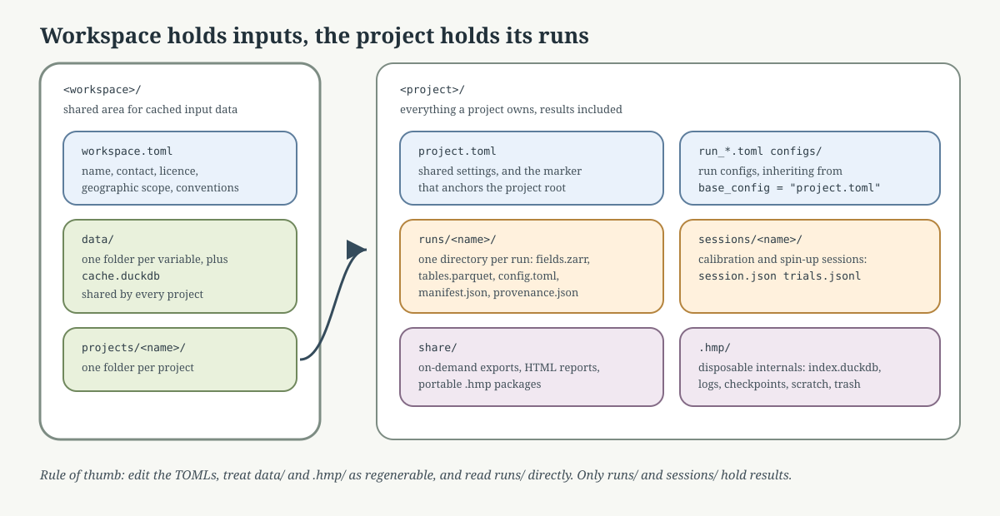

Workspace layout#
HydroModPy nests three levels: workspace > project > run.
The workspace owns the shared input-data cache. Several projects on the same geographic area reuse it instead of downloading twice.
The project owns everything else: its configurations, its runs, its calibration sessions, its exports, and the index over them. It is anchored by
project.toml.The run is one directory under
runs/, named after the run.
{kind=link}

Fig. 15 The workspace separates cached inputs from project-owned results. That separation is what keeps repeated workflows inspectable instead of turning one folder into an output dump.#
A workspace is optional. A project directory holding a project.toml
works on its own; it simply keeps its own data/ cache instead of
sharing one.
Canonical layout#
<workspace>/
├── workspace.toml metadata: name, contact, licence, scope
├── data/
│ ├── cache.duckdb input-data cache index (one per workspace)
│ ├── blobs/ normalised copies of ingested files
│ └── <variable>/ dem/, recharge/, hydrometry/, ... one per variable
│ ├── README.md accepted formats and naming for that variable
│ └── <file> + <file>.json the artefact and its provenance sidecar
└── projects/
└── my_basin/
├── project.toml shared settings, and the marker of the project root
├── run_demo.toml one run config, inheriting from project.toml
├── configs/ reserved for config variants (never created for you)
├── hydromodpy.lock frozen input data of the project
├── runs/
│ └── <run name>/ one directory per run (see below)
├── sessions/
│ └── <stamp>-<method>-<id8>/ calibration and spin-up sessions
├── share/ on-demand exports, reports, .hmp packages
└── .hmp/ disposable internals
├── index.duckdb the query index, rebuildable
├── logs/ pipeline logs
├── checkpoints/ per-run resume state
├── running/ heartbeat sidecars of live runs
├── scratch/ solver working directory
└── trash/ quarantined orphan stores
One run directory:
runs/<name>/
├── config.toml frozen resolved configuration
├── fields.zarr/ array store
├── tables.parquet/ one Parquet file per tabular payload
├── figures/ figures rendered for this run
├── manifest.json seal, written last
├── provenance.json versions, git commit, solver binary
├── annotations.json tags and notes, written after the seal
└── trash.json present only while the run sits in the trash
runs/, sessions/ and share/ are git-ignored by the scaffolded
.gitignore, together with .hmp/.
Reserved directory names#
Every name above is declared once, in
hydromodpy.core.state.paths. The names of the files inside a run
belong to hydromodpy.results.storage.contract. Do not create your
own runs/, sessions/, share/ or .hmp/ entries by hand: the
index rebuild reads them as HydroModPy output.
Scaffolding#
hmp workspace init ~/hmp_workspace
hmp project new my_basin --workspace ~/hmp_workspace
hmp workspace init writes workspace.toml, the data/<variable>/
folders with their README and example files, and a ready-to-run
projects/example/. hmp project new writes project.toml,
run_demo.toml and a .gitignore. No index database is created at
that point: the first run creates it.
Path resolution#
Given a config TOML, HydroModPy resolves the shared data workspace in this order, first match wins:
Explicit. The TOML declares
rootordata_dirunder[workspace].[workspace] project_root = "." root = "/path/to/workspace" # per-component overrides: # data_dir = "/path/to/workspace/data" # catalog_path = "/path/to/my_basin/.hmp/index.duckdb" # runs_dir = "/path/to/my_basin/runs" # output_root = "/scratch/my_basin" # redirects .hmp/scratch and share/
Environment.
HMP_WORKSPACEpoints at a directory.Scaffold. The project sits at
<workspace>/projects/<name>/and<workspace>/data/exists.Standalone project. Nothing else matched: the project directory is its own data workspace, so
data/is created next toproject.toml.
Results never follow that resolution. They are project-local by
construction: catalog_path defaults to
<project_root>/.hmp/index.duckdb and runs_dir to
<project_root>/runs.
The keys accepted under [workspace] are exactly project_root
(required), root, catalog_path, data_dir, runs_dir and
output_root. Any other key is rejected: the configuration model sets
extra="forbid".
The project root itself is found by walking up from the config file to the
first directory holding project.toml. The marker is the config file,
never a database file, because the index may be absent.
Diagnosing the resolution#
hmp doctor --toml reports which branch produced the workspace and the
resolved paths:
hmp doctor --toml ~/hmp_workspace/projects/my_basin/run_demo.toml
OK workspace resolved via scaffold
OK workspace_root /home/bb/hmp_workspace
OK catalog_path /home/bb/hmp_workspace/projects/my_basin/.hmp/index.duckdb
OK data_dir /home/bb/hmp_workspace/data
OK runs_dir /home/bb/hmp_workspace/projects/my_basin/runs
OK results:layout 1 index row(s), 1 run director(y|ies)
The workspace line names the branch that fired: explicit, env,
scaffold or project. The results:layout line compares the index
row count with the number of run directories on disk; a mismatch is the
signal to run hmp catalog reindex.
The same command also checks the Python version, the heavy dependencies and the solver binaries, so it is the first thing to run when something breaks.
Machine-wide index#
A separate DuckDB file under $XDG_STATE_HOME/hydromodpy/index.duckdb
federates the projects registered on the machine, for cross-project
discovery. One row is one project root, the directory holding
project.toml and its .hmp/index.duckdb, because that index file is
what the federation attaches. A workspace root has none of its own, so
registering one adds the project roots under its projects/ directory,
one row each, and a workspace with no project yet adds nothing. The file
is fully recreatable from the registered projects and is operated by
hmp workspace register, hmp workspace search,
hmp workspace forget and hmp workspace prune.
Two environment variables relocate the machine-wide directories:
HMP_STATE_HOME for the state directory (global index) and
HMP_CACHE_HOME for the cache directory (solver binaries under
bin/). HMP_BIN overrides the binary directory alone. None of them
patches a configuration field.
Where to look next#
Project vs Run for the project versus run distinction.
Results and exports for reading each artefact of a run.
Storage Layout for the storage contract itself.